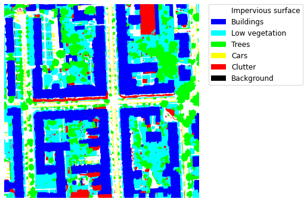
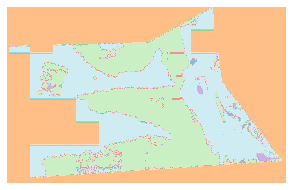

MMSegmentation for Remote Sensing
用 MMSegmentation 跑通遥感影像语义分割的完整记录：数据集注册、配置文件改写、 训练与推理，以及城市地表覆盖的实际分割结果。

2020–2023 年间的学习笔记与实验记录，覆盖 PyTorch、Transformer、遥感分割与数据集工作。 部分文章已按新站排版重写。
FEATURED · 已重写并补充说明
用 MMSegmentation 跑通遥感影像语义分割的完整记录：数据集注册、配置文件改写、 训练与推理，以及城市地表覆盖的实际分割结果。

torch.nn.Unfold 是把图像切成 patch、实现局部感知与 ViT 类结构的基础。
这篇笔记从张量形状讲起，演示如何用一行代码取出图像块。
在建模之前先看数据：类别分布、图像尺寸、可视化样本与标注一致性检查。 遥感数据集尤其容易在类别不平衡上栽跟头。

ARCHIVE · 保留原始路径与内容